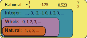

1.1 Subsets of Real Numbers
Introduction
The history of numbers is a long and fascinating one, with roots stretching back into prehistoric times.
Whenever people have wanted to count or measure objects they have created a type of number to suit their needs. In some cultures counting on fingers or toes was sufficient. In others, tally marks were made on wood or bone to record quantities.
As the concept of numbers evolved over time, symbols were created to represent specific values. The numerals we commonly use today, \(0, 1, 2, 3, 4, 5, 6, 7, 8, 9\) were developed in India about 1500 years ago and spread throughout Southeast Asia, China, Africa, and Europe along Arab trade routes.
As science, technology, and commerce have advanced, mathematical thought has expanded the types of numbers available and the operations for combining them. The numbers discussed in this section are all part of the set of real numbers.
Natural Numbers
Natural numbers are the numbers we usually count with: \(1, 2, 3, 4, ...\) and so on. Natural numbers are one of the oldest and most studied sets of real numbers. No doubt you already know a few facts about natural numbers.
You probably know that when you add or multiply natural numbers, changing the order does not change the answer: \(3+5=5+3\) and \(6 \times 10=10 \times 6\), for example.
You might also know that most natural numbers are either prime or composite. Prime numbers, like \(2, 3, 5, 7, 11,\) and \(13\) can only be divided evenly by \(1\) and themselves. Composite numbers, on the other hand, can be divided by several numbers. The number \(8\), for instance, can be divided evenly by \(1, 2, 4\), and \(8\). (Fun fact: the number \(1\) is in a special category of its own, it is considered neither prime nor composite.)
What you may not have considered is that adding two natural numbers always creates another natural number, no matter how many times you do it. However, when subtracting it's possible to end up with \(0\) or with a negative value, neither of which are natural numbers.
If we add \(0\) to the natural numbers we call that new set the whole numbers.
Integers
Today the number \(0\) and negative values are ideas we are familiar with and encounter regularly: a microwave timer beeps when it gets down to \(0\) seconds, the temperature outside might be \(-15\) degrees, etc.
What may seem common now were actually significant advances in thought that took mathematicians hundreds of years of work. In fact, it wasn't until Newton's work on calculus in the 17th century that they became a fundamental part of the real number system.
When you include all the natural numbers, along with their negatives and the number \(0\), you create a set called the integers, which looks something like this: \(..., -4, -3, -2, -1, 0, 1, 2, 3, 4, ...\)
Any combination of adding, subtracting, and multiplying integers always results in another integer. Division, however, can sometimes produce numbers that are not integers.
Rational Numbers
Any number that can be written as a fraction, such as \(\frac{1}{2}\), \(\frac{2}{3}\), or \(\frac{3}{4}\), is considered a rational number. Every rational number can also be expressed as a decimal that either terminates or repeats. For example, \(\frac{3}{4}\) as a decimal is \(0.75\), which terminates, and \(\frac{2}{3}\) as a decimal is \(0.666...\), which repeats.
Notice that this includes all whole numbers and integers since they can be written as fractions with a denominator of \(1\) or as decimals that terminate.
In fact, all of our sets so far have included the earlier sets. Natural numbers are part of the set of whole numbers, which are part of the set of integers, and integers are a subset of rational numbers.

And since we can add, subtract, multiply, and divide rational numbers as much as we want (provided we don't divide by \(0\)), you might assume the story is over. If so, you're in good company (the famous Greek mathematician Pythagoras thought the same thing), but it turns out that there's still more to explore.
Irrational Numbers
You might be surprised to learn that some quantities cannot be expressed as whole numbers or as fractions. For instance, the length of the diagonal of a square is often not a rational number.
Since these numbers cannot be expressed as a ratio of whole numbers they are matter irrational numbers. If you try to find the decimal representation of an irrational number you'll find a never-ending decimal that goes on forever and doesn't repeat.
Many irrational numbers are the result of taking square roots, like \(\sqrt 2\), but several more come from other mathematical concepts and techniques. Perhaps the most famous irrational number is \(\pi\), which is the ratio of the circumference of a circle to its diameter.

The Real Number Line
A number line is a useful tool for visualizing real numbers. It is nothing more than a straight line with marks that correspond to specific numbers. Positive numbers are positioned to the right of zero while negative numbers are placed to the left with arrows on either end indicating the line extends in both directions.
Every real number has a place on the number line, and every location on a number line is assumed to correspond to a real number. Here are a few real numbers and their relative locations on the number line.

Inequality
Real numbers can be ordered based on their position on the number line. Numbers on the left are considered smaller than numbers on the right.
The symbols \(\gt\) and \(\lt\) are used to represent "greater than" and "less than" relations, respectively. The wide side of those symbols opens toward the larger value while the other side points to the smaller value.
The symbol \(\gt\) means that the value on the left is greater than the value on the right. For example, \(10 \gt 5\) shows that \(10\) is greater than \(5\).
The symbol \(\lt\) means that the value on the left is less than the value on the right. For example, \(4 \lt 8\) indicates that \(4\) is less than \(8\).
Absolute Value
The number line also helps us find the size, or magnitude, of a number. The distance between \(0\) and a number is matter the absolute value of the number and is written as \(|x|\). For example, \(|3|=3\) since the number \(3\) is three spaces away from \(0\). Similarly, \(|-3|=3\) because \(-3\) is also three spaces from \(0\).
In practice, finding the "absolute value" means removing any negative sign in front of a number.
Looking Ahead
Now that we've explored the different types of real numbers and how they relate to each other, we're ready to start working with them. In the next sections we'll focus on operations with integers and fractions. Refreshing these skills now will form a solid foundation for all the algebraic work that follows.